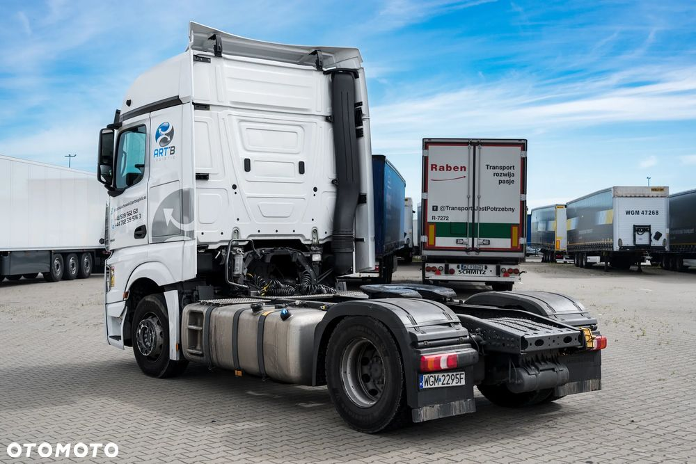

MERCEDES-BENZ ACTROS 1851 LS 4x2
Ciągnik siodłowy został zakupiony w polskim salonie Mercedes-Benz. Ciągnik był objęty pakietem complete, który był ważny do października 2024. Samochód był na bieżąco serwisowany w autoryzowanych serwisach MB Truck.
Ciągnik jest w dobrym stanie technicznym, przeznaczony do dalszego użycia. Mogę również przesłać całą historię napraw i serwisu auta, a także udzielić dodatkowych informacji.
